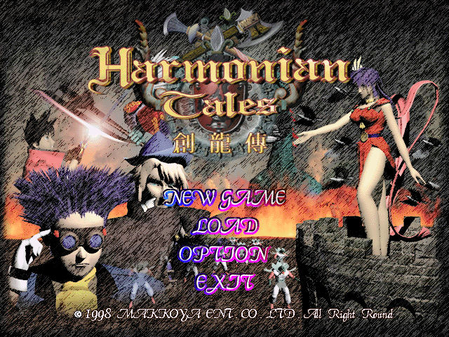
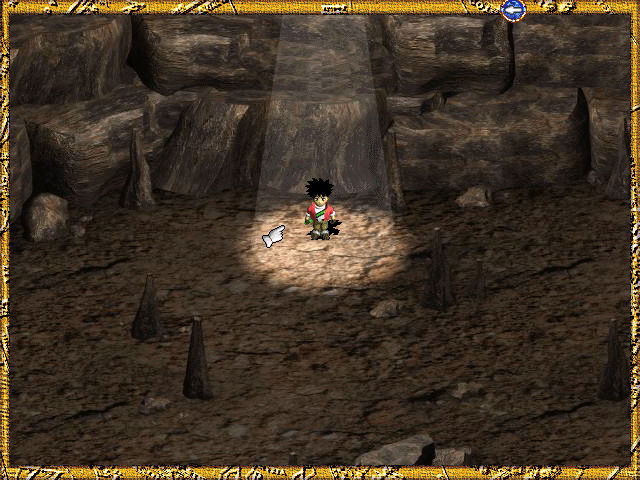
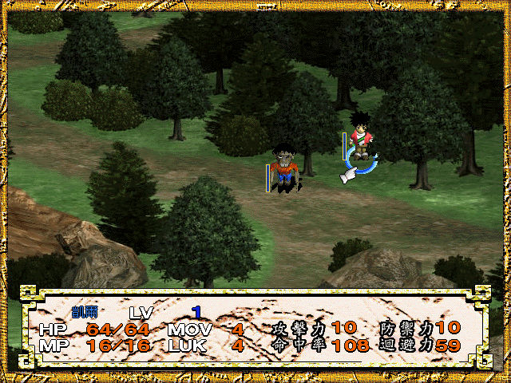

名稱：創龍傳 (Harmonian Tales，中文版)
簡介：韓國Makkoya 1998年出品的角色扮演遊戲，由梵太師中文化並代理發行，以3D斜角畫
面顯示，採團隊策略回合制方式戰鬥。本遊戲亦為「遊戲世界」雜誌193期的附贈光碟
[待補]。



保護：光碟，破解碼：
harmonia.exe
47 3B E8 0F 82 68 FF FF FF 33 C0
90 33 C0 -- -- -- -- -- -- B0 01
25 63 3A 5C 00
-- -- -- 00 --
須拷貝光碟上的harmonia.ev2檔案，和兩個AVI檔（非必要，沒有時不播放）。
備註：XP以上系統安裝時，要設定SETUP.EXE為Win9x相容。
備註：VirtualBox需搭配WineD3D。